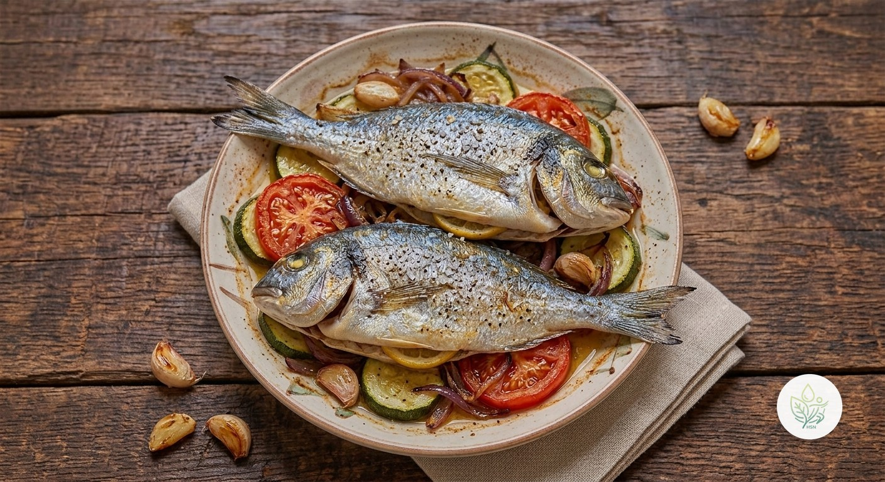

Dorada al Horno con Tomate, Calabacín y Cebolla
BDorada al horno sobre una base de calabacín, tomate y cebolla con ajo y limón. Ligera, jugosa y con más de 40 g de proteína por ración en solo 340 kcal.
Con unas 340 kcal, 41 g de proteína y solo 3 g de grasa saturada por ración, es una cena muy ligera. Las verduras aportan fibra y volumen, y el AOVE, la grasa del plato. Lo calificamos B y no A por el colesterol dietético de la dorada.
Ingredientes (toca el nombre para ver su ficha)
- 🐟 Dorada 400 g
- 🥒 Calabacín 200 g
- 🍅 Tomate 200 g
- 🧅 Cebolla 100 g
- 🫒 AOVE (aceite de oliva virgen extra) 15 g
- 🍋 Limón 20 g
- 🧄 Ajo 5 g
Elaboración
- Precalienta el horno a 200 °C. Corta el calabacín en rodajas, la cebolla en juliana y el tomate en rodajas gruesas.
- Extiende las verduras en una bandeja con el ajo laminado y la mitad del AOVE, y hornea 12 minutos.
- Coloca encima las doradas limpias (unos 200 g cada una), con unas rodajas de limón en el interior, y riega con el AOVE restante.
- Hornea 18-20 minutos más, hasta que la carne esté opaca y se separe de la espina. Sirve con el jugo de la bandeja y unas gotas de limón.
Información nutricional (receta completa, 2 raciones)
De las grasas, 6 g son saturadas · de los carbohidratos, 15 g son azúcares · sodio: 311.2 mg
Información nutricional (por ración)
De las grasas, 3 g son saturadas · de los carbohidratos, 7.5 g son azúcares · sodio: 155.6 mg
Preguntas frecuentes
¿Cuántas calorías tiene la receta de Dorada al Horno con Tomate, Calabacín y Cebolla?
Toda la receta de Dorada al Horno con Tomate, Calabacín y Cebolla tiene 675.8 kcal repartidas en 2 raciones, es decir, unas 337.9 kcal por ración.
¿Puedo usar lomos de dorada?
Sí, los lomos se hacen en unos 10-12 minutos. Colócalos sobre las verduras ya casi hechas.
¿Cómo hago el plato más completo?
Acompáñalo con arroz integral cocido o patata cocida; subirán las calorías y los hidratos.
¿Puedo congelar las sobras?
Mejor no: el pescado cocinado pierde jugosidad al descongelarse. Es preferible comerlo en el día o al siguiente.